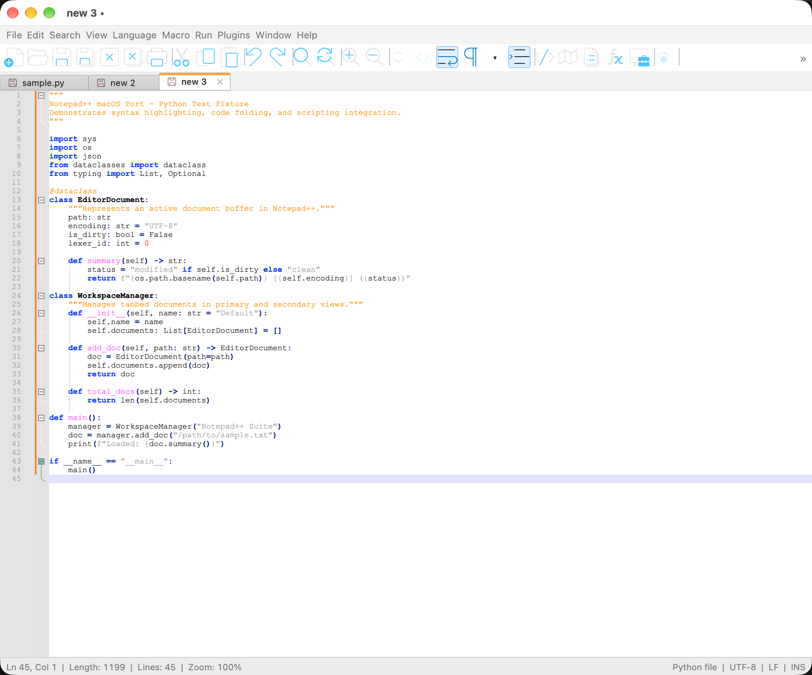
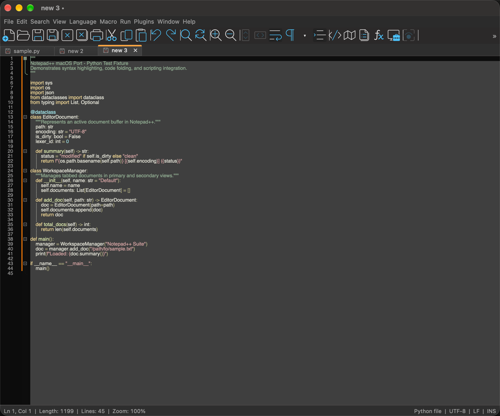

NP++ for macOS
A native macOS port of Notepad++, built with AppKit, Scintilla and Lexilla.


Features
- Menu row above a toolbar row, with a » overflow popover for hidden buttons.
- Editor theme: light or dark for all editor text areas, independent of the window theme.
- Encoding support for UTF-8 (with and without BOM), UTF-16, and Windows-1252, with warnings before characters are replaced.
- Find, replace, go to line, macros, and Document Map, Document List and Function List panels.
Build from source
cmake -S . -B build -DCMAKE_BUILD_TYPE=Release cmake --build build --config Release --parallel open build/NP++.app